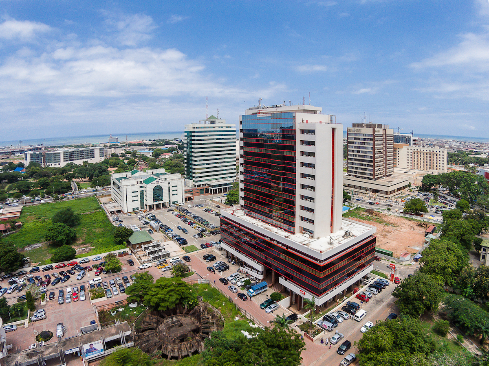
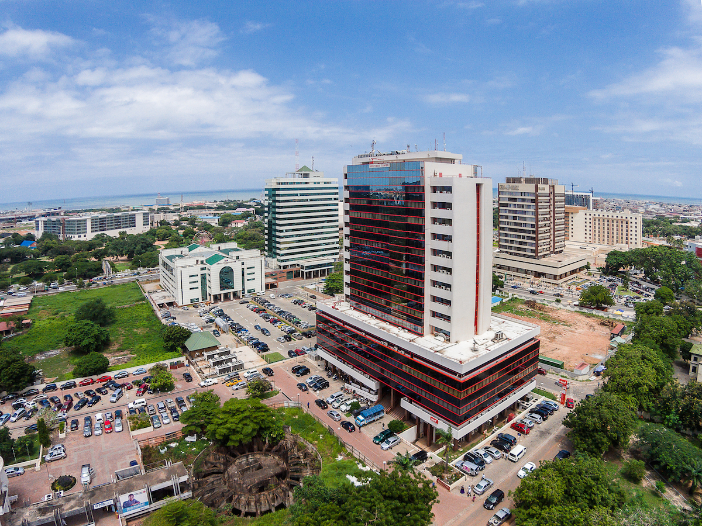

Africa is the world's second-largest and second-most populous continent, after Asia. At about 30.3 million km² including adjacent islands, it covers 6% of Earth's total surface area and 20% of its land area. With 1.3 billion people as of 2018, it accounts for about 16% of the world's human population. Africa's average population is the youngest amongst all the continents; the median age in 2012 was 19.7, when the worldwide median age was 30.4. Despite a wide range of natural resources, the continent is one of the least wealthy per capita in large part due to the legacies of European colonization in Africa. Despite this low concentration of wealth, recent economic expansion and the large and young population make Africa an important economic market in the broader global context.
 
